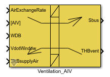
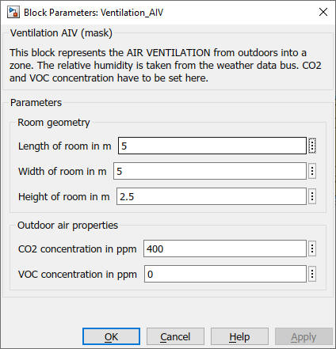

Ventilation
AIV
Path: CARNOT/source/ventilation
Purpose
Model the ventilation of a room for the detailed building model.
Description
The block is a model for the ventilation of the room or zone. The model is suitable for the building models like Room_Radiator or Room_Floor_Heating (see /Load/Houses).
Outdoor ambient air with a temperature from the Weather Data Bus enters the room by the AirExchangeRatge and the window. Use the air echange rate to model the natural convection by gaps (a typical value for a new built house is 0.1 /h).
Additionally the Thermo-Hydraulic Bus THBsupplyAir enters the room. Use this input to connect a ventilation system model to the room.
The convective power and the power by air exchange are set in
the corresponding elements of the Sbus.
Input
Output
Parameters and Dialog Box

Characteristics
Direct Feedthrough Yes
Sample
time
Inherited
from driving block
Vectorized
No